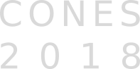

Programme
Conference programme
Speakers
Invited speakers include:
Dmitry Abanin — Geneva
Ehud Altman
— Berkeley
Ivet Bahar
— University of Pittsburgh, USA
Raffaella Burioni
— Università di Parma
Andrea Cavagna
— CNR-ISC, Institute for Complex Systems, Rome
Ton Coolen
— KCL
Luca Dall'Asta
— Polytechnic University of Turin
Fabian Essler
— Oxford
Markus Heyl
— Dresden
Hernan Makse
— CUNY
Carmen Molina-Paris
— Leeds
Adam Nahum — Oxford
Arijeet Pal
— Oxford
Simone Pigolotti
— OIST, Okinawa
Anatoli Polkovnikov
— Boston
Édgar Roldán
— ICTP - International Centre for Theoretical Physics
Daniel Sussman
— Syracuse
Pierfrancesco Urbani — CEA, France
Eric Vanden-Eijnden
— Courant Institute, NYU
Organisers
CANES Staff
Alessia Annibale
Joe Bhaseen
Chris Lorenz
Peter Sollich
Jemma Trick
Website design
Andrew Lane
Gregg Szep
Home
Background
Programme
Registration
Location
Contact
Top